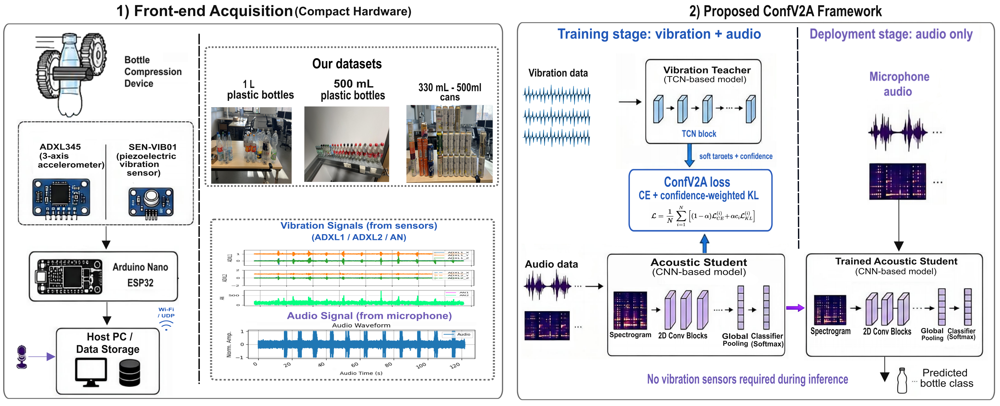
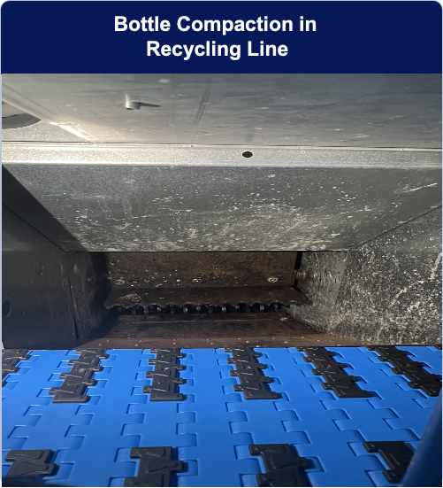
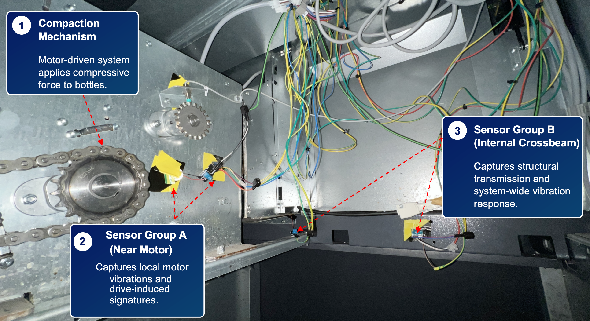

Audio-only deployment, vibration-guided training
ConfV2A classifies bottles and cans in recycling compactors by training an audio-only student with a vibration teacher. The deployed model only needs microphone audio.

The page is organized as a quick path through the work: first the problem and framework, then the data collection setup, then the training pipeline and code entry points.
Start with the framework figure and project motivation.
Review the compactor, sensors, classes, and aligned windows.
Follow the vibration teacher to acoustic student pipeline.
Compare audio baseline, teacher, standard KD, and ConfV2A.
Run preprocessing, training, distillation, and inference scripts.
The self-collected dataset contains synchronized microphone audio and vibration signals recorded during bottle/can compression events in a recycling compactor.
| Item | Description |
|---|---|
| Classes | 1 L bottle, 500 mL bottle, 330 mL can, 500 mL can, error |
| Modalities | Microphone audio and vibration sensors |
| Windows | 0.8 s time-aligned audio-vibration windows |
| Split | 70% / 15% / 15% time-wise blocked split |
The repository includes raw synchronized recordings, processed vibration CSV files, training scripts, trained model outputs, alpha-sweep experiments, and noise robustness results.


ConfV2A combines hard-label learning with confidence-weighted cross-modal distillation. A frozen vibration TCN teacher provides softened class distributions, and an acoustic CNN student learns from both labels and teacher outputs.
Pair audio and vibration windows by event timing.
Fit a vibration-only TCN classifier.
Initialize the acoustic CNN from audio-only learning.
Weight KL supervision by teacher confidence.
Run inference with microphone audio only.
| Method | Inference input | Accuracy | Macro-F1 |
|---|---|---|---|
| Audio-only baseline | Audio | 79.01% | 78.19% |
| Vibration teacher | Vibration | 91.14% | 91.80% |
| Standard KD audio student | Audio | 86.99% | 86.62% |
| ConfV2A audio student | Audio | 90.24% | 89.83% |
ConfV2A outperforms standard KD from clean audio to 0 dB waveform-level Gaussian noise, with the clearest gains from 30 dB to 5 dB.
ConfV2A also improves performance on UOEMD, MaFaulDa, and QU-DMBF under the evaluated audio-vibration protocols.